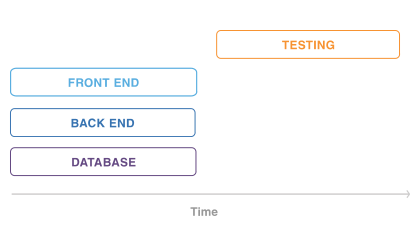

Automated Testing & Agile Workflows
Asset or Liability?
By: Randy Syring
Twitter: @RandySyring
Relentless. Software. Craftsmanship.

Introduction
I'm the Chief Executive Developer at Level 12.
Level 12 is a web & database development firm that uses:
- solid engineering,
- proactive communication, and
- modern development practices
to make our customers really, really, happy.
Why it Matters to You
- Level 12 ... uses... modern development practices
- to make our customers really, really, happy
Net result: this works and is maintainable in the "real world"
Well, my "real world", YMMV
- Methods & concepts refined over last 7 years
- Primarily involved in web development (11 years)
- Not operating "at scale"
- Your context may differ
- Industry proven and advocated methods
Agile: Let's Review
- Individuals and interactions over processes and tools
- Working software over comprehensive documentation
- Customer collaboration over contract negotiation
- Responding to change over following a plan
(Source: http://agilemanifesto.org/)
Agile: Select Principles
- Our highest priority is to satisfy the customer through early and continuous delivery of
valuable software.
- Welcome changing requirements, even late in development.
- Deliver working software frequently...with a preference [for a] shorter timescale.
- Working software is the primary measure of progress.
- Continuous attention to technical excellence and good design enhances agility.
- The entire process needs to be sustainable over time.
(Source: http://agilemanifesto.org/principles.html)
Boil it Down
We need to be able to continuously and sustainably:
- Respond to change: early & continuous delivery, changing requirements, flexibility, agility
- Ship working software with confidence: Excellence, working software, valuable software
Software You Are Confident Works!
- How can you be sure that your software works?
- You have to TEST IT!!!
- But who tests it? And how?
How are we doing?
- Any objections or concerns so far?
- Do we have a good feel for what Agile means for a software team?
Test Types Overview
- unit tests: isolate to function or method
- integration tests: multiple components
- functional tests: from the perspective of a browser/client
- browser tests: functional but using Selenium
- sytem tests: infrastructure dependent testing
- qa testing: let a human break it
Your definitions may differ.
Audience Survey
- Are you or your team testing your code?
- Are using automated tests?
- Have a build pipeline that integrates testing?
- Reasons for not using automated tests?
- What makes code "untestable"?
- What do you think of TDD?
Practice What You Preach
| |
Proj A |
Proj B |
|---|
| Age |
6+ years |
1.5 years |
| Python Tests |
8,294 |
1,444 |
| JS Tests |
309 |
0 |
| DB Tables |
200+ |
35+ |
| Python LoC |
145K |
26.5K |
| Python Test LoC |
61K (42%) |
14.7K (55%) |
| Code Coverage |
95% |
96% |
| Test Time |
39:04 |
6:58 |
Release interval: whenever (multiple times per day if needed)
Agile Workflows Require Automated Testing
Without heavy use of automated testing, a true agile workflow is unsustainable.
Reasons
- It becomes increasingly difficult to do comprehensive regression testing over time.
- Diminishing returns affect both quality and velocity.
- Pushing all testing to a QA team creates a non-agile silo.
Regression Testing Unsustainable

Diminishing Returns

Manual Testing is Unsustainable

Waterfall

Agile

QA Dependent Testing

The tight feedback loop is missing.
Agile Developers Need to Write Tests
If developers are not creating automated tests in parallel with the production code, a true
agile workflow is unsustainable.
Reasons
- Sustainability: Developers are already testing, but that effort is an expense rather than asset or investment.
Expense vs Asset
Reasons
- Sustainability: Developers are already testing, but that effort is an expense rather than asset or investment.
- Velocity: It saves time in the long run.
I Don't Need No Stink'n Tests

I Don't...Need....ummm...help?

Time Savings Overall
Reasons
- Sustainability: Developers are already testing, but that effort is an expense rather than asset or investment.
- Velocity: It saves time in the long run.
- Velocity: Automated tests are code and developers are the most skilled workers when it comes to coding.
- Velocity/quality: Fixing bugs is much easier when they are caught early.
- Quality: Unit and intetgration tests ensure confidence when refactoring.
The Place for QA
- QA should work on thinking from a human's perspective. Developers often have "creator bias."
- QA should focus on testing that is hard to automate (usability, aesthetics, etc.).
Where To Begin?
- Overwhelming, confusing, etc.
- Goal: high productivity
- Productivity vs efficiency, anyone?
Productive Testing
- Productive: creating or enhancing value
- Tests are an investment, invest wisely
- You are already testing, asset or expense?
Test Centric Development (TCD)
- do as much productive testing as possible
- acknowledges that we have limited resources
- takes into account the 80/20 principle (93%)
- gives the developer flexibility
- recognizes different contexts have different needs
- when done rightly, results in significant test coverage
- This is not a get out of TDD jail free card!
TCD Guiding Principles
- confidence and quality increase with testing
- developers write tests at the same time as the code
- default to writing tests first
- test core functionality as thoroughly as possible
- if resources limit testing, cheat less used and/or less important areas
- if the resources are available, test everything
- managers and stakeholders need to reinforce the importance of tests
A Final Plea
- You are already testing, capture the value!
- Good bridges aren't built without blueprints.
- Just get started.
- Good tests will lead to better code & greater confidence.
Tip #1: Easy Stuff First
- Remember this is an investment, how much capital do you have?
- Focus on unit or functional testing, whichever makes the most sense.
- Avoid areas of the code that are harder to test (initially).
Tip #2: Make Code Easier to Test
- Testing is a first-class activity
- You should modify your code to make it easier to test
Code Testability Example
import requests
def get_project_bandwidth(project_name):
url = 'https://pypi.python.org/pypi/{0}/json' \
.format(project_name)
resp = requests.get(url)
data = json.loads(resp.text)
total_bytes = 0
for url in data['urls']:
total_bytes += url['size'] * url['downloads']
return total_bytes
Code Testability Example
def get_project_bandwidth(project_name):
url = 'https://pypi.python.org/pypi/{0}/json' \
.format(project_name)
resp = requests.get(url)
return calc_urls_bandwidth(resp.text)
def calc_urls_bandwidth(json):
data = json.loads(json)
total_bytes = 0
for url in data['urls']:
total_bytes += url['size'] * url['downloads']
return total_bytes
Code Testability Example
def get_project_bandwidth(project_name):
url = 'https://pypi.python.org/pypi/{0}/json' \
.format(project_name)
resp = requests.get(url)
return calc_urls_bandwidth(resp.json)
def calc_urls_bandwidth(project_data):
total_bytes = 0
for url in project_data['urls']:
total_bytes += url['size'] * url['downloads']
return total_bytes
Tip #3: Easy Test Runs
Can't emphasize this enough, make it easy for people to run your tests!
$ git clone https://github.com/rsyring/bookorders example
$ cd example/
$ tox
[...snip...]
py34: commands succeeded
flake8: commands succeeded
congratulations :)
Huge confidence booster!
Tip #3: Easy Test Runs
- Our applications are portable
- We use a wheelhouse for dependencies.
- We can make some assumptions about the environment.
- Deviations are noted in the Readme
- Inability to run tests this way is a BUG!!
- Enforced by our CI environment
What are the challenges to doing this in your context?
Tip #4: Eat the Elephant
Focus on constant incremental improvements.
We have one simple rule: 'just increase code coverage by 1%'. We are constantly increasing code
coverage by writing more test cases. Even if the increase is small, it is still a good thing to do.
Credit: http://jodd.org/beta.html
Don't get bogged down by the chaos, just start and then increase little by little.
Tip #5: Failing Tests Are Never OK!
- Never commit or accept a PR if tests are failing
- Skips can be used when needed
- Failed CI builds should email, post to Slack, etc.
Tip #6: Test Runs Should Be Fast
- Fast code/test cycles are key
- Don't do premature optimization
- Make improvements where needed
- Know your test runner, work inside out
Tip #7: Know What You are [Not] Testing
Ask yourself regularily what you are trying to test
def contact_form(post_args):
form = SomeForm(post_args)
if form.is_completed():
send_contact_email(post_args['name'],
post_args['email'], post_args['body'])
else:
self.render(form.to_html())
Tip #8: Use Code Coverage Tools

Tip #8: Use Code Coverage Tools

Tip #9:

Tip #9: Automate All The Things
- A continuous integration (CI) environment brings great stability
- Put this in place ASAP, it will pay dividends
- Include as much as possible: testing, linting, complexity, code coverage
Thanks For Attending
By: Randy Syring
Twitter: @RandySyring
Image credits: